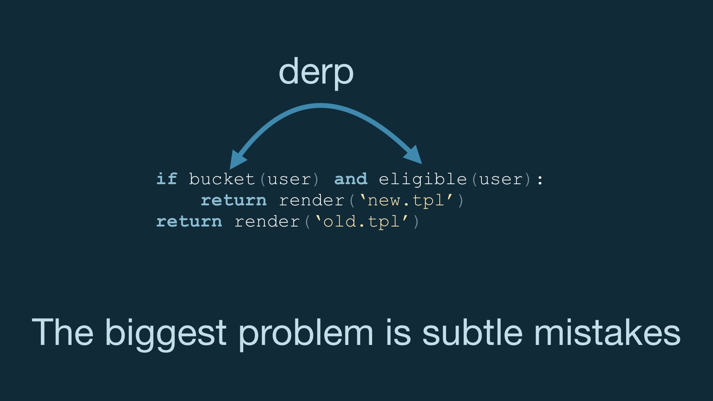

|
# |
| So hey, I’m Dan McKinley # | |
| I’m visiting you from California # | |
| I’m a general purpose engineer. I’ve been in the industry for a while and have worked a bunch of places. # | |

|
Over the years I’ve accumulated a concentration in data and experimentation stuff. And that’s what I wanted to talk about today. Specifically, doing quant measurement of product changes. # |
| I helped build out that capability at Etsy starting in about 2010, until 2014. I wrote a bunch of talks and blog posts about this when I was doing it for the first time. # | |
| Quantitative measurement sounded more straightforward at first than it turned out to be. It turned out to be a complicated endeavor. There are many reasons that measuring what product changes do is not easy. # | |
|
And this is a thing I’m now doing for a second time. And I thought it was worth writing down my thoughts on how to make the transition to doing quantitative things happen relatively smoothly. # |
|
|
Right now I’m working at Mailchimp, which is a marketing platform for small businesses. Although Mailchimp sells A/B testing as part of the product, Mailchimp itself hit about 800 people before running any experiments of its own. I don’t think this was a bad idea. Maybe 800 is pushing it a bit, but overall I think that decision-making was informed and pragmatic. Experiments are hard and not automatically a good idea in all contexts. I think that might be a pretty common scenario. There are probably more than a few large successful businesses that have never tried to measure their releases quantitatively. So if you find yourself in a similar situation, I’ve got some thoughts on how to proceed. Spoiler: once there are hundreds of people involved, everything is really a people problem. # |
|
| I guess first I should back up and make sure everyone understands what I’m talking about. # | |
| The idea with A/B experiments is that instead of having all users see the same experience in your app, or when they visit your website… # | |
| We’ll instead roll a die and show users different things. # | |
|
The introduction of randomness is magic, because that plus large numbers lets us control for all of the variation in what users do and isolate just the effect of the difference in our designs. # |
|
| So then we can track success metrics separately for every variation that we show. # | |
| And then we can see how the different designs perform comparatively, using statistics. # | |

|
And then it’s at this point that, in my experience, mass hysteria and chaos ensue. # |
| There are at least a couple of reasons for this. # | |
| First of all, in practice, it’s pretty hard to execute any of those steps flawlessly. # | |
| And second, the entire premise here is that we’ll build things and then maybe not ship them. And that is a big deal. # | |
|
It’s very different from the way you’ve built stuff before. Up until now, you built things and you launched them. And then you moved forward with feelings of accomplishment. It’s much tougher technically to do experiments, and it’s also much tougher emotionally. Which is probably one reason why it’s so common for companies to wait such a long time before even trying it. This is not entirely unreasonable. # |
|
| If you do want to try it, I’ve identified at least a few things that you should worry about. # | |

|
Correctness. Doing experiments correctly is hard along several dimensions, I’ll talk about some of these. # |
|
Second: effectiveness. It’s possible to do experiments correctly, but for no particular reason. It’s more than possible, actually. If you don’t try to actively avoid it, you’ll definitely run a lot of pointless experiments and just make everyone mad. # |
|

|
And making everyone mad would be a problem, because adoption is a thing you should worry about. Teams can reject the practice of running experiments, or just never try at all. If you are the CEO of the company and can tell everyone what to do maybe you can ignore this. Otherwise it’s important to get people on your side. And it’s not like it’s bad for people to be on your side if you’re the CEO. # |
|
Ok so for the first problem, correctness, the biggest single thing you can do is not build your own A/B testing platform. # |
|
|
Incidentally, I am a person who has helped build an A/B testing platform. This is a screenshot from Catapult, Etsy’s proprietary A/B testing platform. You should forgive me for being a part of this because it was 2010, and there was no better alternative at the time. That’s no longer true, and at least until you really know what you’re doing, it’d be a bad idea to build your own thing now. I should know, I singed my eyebrows off many times while our solution was coming together. # |
|
| Look. Confidence is a good thing. You want an engineering team that isn’t afraid of building stuff. # | |
|
But excess confidence pointed in the wrong direction is your mortal enemy. I say this as a frequently excessively-confident engineer. # |
|
| There are a bunch of things that are hard when it comes to running product experiments. Here are a couple of them. # | |
| Counting things. # | |
| If you have too many things to count or you have to do it really quickly, even just counting things accurately is hell. # | |
| Bucketing. How you decide who sees what. This is a fun little problem. That makes it dangerous, and it’s good to offload it onto someone else. # | |
| Finally: the specific choices you make about how experiments will be measured and evaluated. I’ll call this your stats model. # | |
|
This is the hardest one—and the one you’re probably going to have the least expertise in. There’s more to this than just doing t-tests. Nothing eliminates this as a booby trap. But there are vendors out there that do a pretty reasonable job getting you started. You’ll still have problems, but you’re much better off with someone else’s starting point than winging it. # |
|
|
So you should buy a vendor’s experimentation platform now. But that’s not to say that every product from every vendor is good, because they’re not. One category of product you can buy is javascript trackers that mutate the DOM of webpages as they load, on the frontend. One thing I have decided firmly is that this entire category of product is bad. They’re bad for engineering reasons, and they introduce bias which is bad for analysis reasons. I don’t really have time to dig into this one but I’d urge you to measure the rate at which people block your experiments if you insist on trying this. # |
|
|
The good news is that you can buy perfectly good backend testing products, and you don’t need to use js testing. The additional bad news is that you still have to wear your critical thinking hat when interacting with A/B testing products. Vendors have an incentive to keep you using their products, and this introduces moral hazard. # |
|
|
Products can be fine in theory, but come with messed up factory settings. You have to review all of this. A low setting for determining statistical significance would nudge you towards believing that experiments are more effective than they are in reality. # |
|
|
Vendors obviously want you to use their stuff, and I think you should. But be careful about product design choices that push you to run a lot of experiments. I think you have to focus on effective tests, not a lot of tests. I’ll talk more about this in a second. # |
|
| It’s like Lenin said, you look to the person who will benefit, and uh, you know # | |
|
Ok, so you’re set up. Now what? What tests should you do? How many? Where? I think you should start slowly. # |
|
|
Again, one theory is flood the zone and run a ton of tests when you’re getting started. The thinking there is that you don’t really know where an effective place is to run tests. And that’s true, you probably don’t. # |
|
|
On average, these tests are unlikely to do anything. But you might get lucky. It’s not a dumb theory, but I think it’s misguided. I submit that experiments that are unlikely to detect change or are likely to make incorrect conclusions are worse than not running experiments. # |
|
| Let me explain why. So it’s true that when you’re first getting started running experiments, you probably don’t have great information about where on your website or in your app that you should run them. # | |
| But that’s not your biggest problem, so there’s no particular reason it should determine our behavior. # | |
| The other part of this premise is that running a lot of experiments is a way to explore, and it is. # | |
| But it’s not really the cheapest or best way to explore. # | |
|  |
The biggest problem you have when you’re first running experiments is just executing them correctly. Your biggest problem is subtle mistakes in code that looks correct, but is in fact wrong in a way that honks up the measurement. And that’ll only be obvious after burning days or weeks, when you look at the data and realize it’s wonky as hell. You need to build up the capability to catch this stuff over time. And that capacity is a broad base of engineers and analysts with experience. People who know what to look for and where to apply paranoia. You don’t come out of the gate with that. # |
| So scaling up writing the code correctly is a real challenge. # | |
| Stats thinking is the same, but even worse. There are a bunch of ways to get in the weeds evaluating an experiment, and you have to worry about false positive results and false negative results at the same time. # | |
|
It’s important to understand that the odds that an experiment is a weird shitshow is not coupled to the experiment’s odds of detecting an effect. Embarking upon wild goose chases while running what are fundamentally experiments with slim chances of success wastes time, and that impugns your credibility. # |
|
|
Correctness—even when using a vendor—is probably the biggest problem when you’re getting going and training people. If we’re not going to just randomly try experiments when we start, we need a better way to pick experiments to run. # |
|
| This has been the premise up until now; we come up with an idea, we build it, we run an experiment and then we either ship it or throw it out. # | |
| The problem with this is that building stuff takes more time than not building stuff, and experiments can be weird shitshows. # | |
|
Doing something like this is much better. # |
|

|
The idea is that you do some math, which is cheap, before you sit down and write any code. And before you waste time analyzing and maybe debugging a broken experiment. # |
|
The most basic thing you can do here is something shaped like a sample size estimate. Figure out how long you’d have to run the experiment to notice an effect of reasonable size. You can do fancier modeling than this, but this is a good start. # |
|

|
Once you build up some competence in these kinds of things organizationally, you can scale up experiments. But you should probably wait a while before doing this. # |
| Because building up organizational competence means changing the way you build things. # | |
| And like I said, we’re introducing the possibility that we’ll throw away work, and that’s a big deal for a lot of people. # | |
| There are implications for the way you write code. Let’s say you have a perfectly normal class that you use like this # | |
|
The right thing to do in the context of an experiment could be just cut and paste what you have and then modify it. Every good engineer is going to die a little inside when doing this. And they’ll resist it, until they eventually achieve enlightenment and understand why it is good. # |
|
|
The reason it’s good is because it’s expected that we’re gonna throw a lot of stuff out, and we should be optimizing with that eventuality in mind. We need to change engineer sensibilities here. # |
|
| We want to optimize for experiments that don’t ship because many or most won’t ship. At least not if we’re doing our jobs right. # | |
|
In order to not just create an unworkable mess over time though you need to create space to clean up AFTER code is known to be worth having. But good engineers are also not automatically going to believe that they’ll actually have this time, just because you say they will. It takes time and therapy to earn this kind of trust. # |
|
| Experiments mean doing smaller things, which means you’re working on shorter schedules. If you have product process scaled appropriately to long schedules … # | |
| and you keep the existing process but just shorten the timeframe … # | |
| … you’ll probably find that the result is that the process time is dominating the building time, and you need to fix this. # | |
| You also want to invest a lot less in designs that might not ship, but that can get pretty tricky. Because if you put crappy design out there, it’ll tend to fail because it’s crappy. # | |
|
One way you can make this quicker is to just avoid handling edge cases. You can make design a lot quicker the more details you can keep out of scope, when you’re first trying something out. # |
|
| Obviously, changing all of this is gonna take some time, and you need to do it one project at a time. And you need to get data analysts with stats backgrounds into the process. Which may involve hiring them, if you don’t have them already. # | |
| What tends to be tractable, I think, is just trying to build out a single team doing experiments first. Once that’s working those folks can train the others. # | |
| While you’re trying to get development people on board, you should also be trying not to freak ops people out. You want to make experiments easily observable and discoverable. # | |
|
You should also make changes to experiments as visible as you possibly can. If the list of running experiments is a mystery, or when changes happen is a mystery, people are going to tend to react to any problem by thinking it’s experiments. This is a natural tendency with any new thing in the mix, and as a debugging heuristic it’s not a bad one. But they might errantly turn experiments off in an emergency, which would be bad. # |
|
| So let me leave you with a couple of things. # | |
| If you find yourself working at a successful company that’s never done quantitative measurement, I think it’s a really good idea to try to start. There’s no particular reason to think that what has always worked for that company will work indefinitely, because external conditions change all the time. # | |
| Tooling that you can buy these days is much better, and you should almost definitely buy it. At least to start. But experimentation is irreducibly complex in a number of ways. # | |
|
Focus on the thing that’s actually hard with experiments, which is the process. People will be excited about experiments, and that’s good. You need to point them at the correct shiny object. The correct shiny object is a complicated system of human beings, not a complicated distributed system. # |
|

|
Running low-powered experiments is manifestly worse than not running experiments. # |
|
And a big part of the reason why is that you really want to be able to apply experimentation where it matters. And in order to effect that, you need to accumulate social capital. You need to worry about how experimentation is perceived. It’s no good to be unable to run signup experiments because you already caused a wild hoop-de-doo somewhere less important. # |
|
| It’d be really great to do experiments without having designers quitting and shitposting you in public. Don’t be these engineers. # | |
| You can make data driven work attractive by showing how well it works when applied appropriately. It’s also important to avoid wasting people’s time. # | |
| You don’t get unlimited chances to change your process. # | |
|
So the appropriate posture is one of humility—frame data work as a discipline the company is working to get a handle on together. Don’t frame it as something you’re teaching. Details specific to your company are going to be incredibly important, and path dependency means no two journeys are going to be the same. # |
|
| fin # |